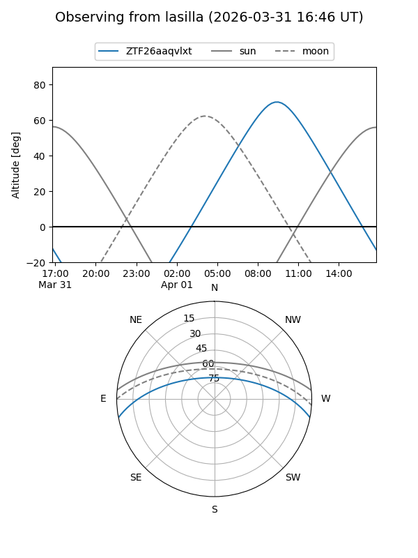
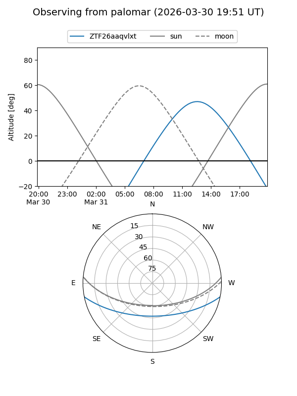

ZTF26aaqvlxt
Target ZTF26aaqvlxt at 2026-03-31 09:49
Aliases and brokers:
FINK: link
Lasair: link
ALeRCE: link
alt names
ZTF26aaqvlxt (ztf,fink_ztf)
Coordinates:
equatorial (ra, dec) = 259.9705,-9.51120
equatorial (HMS+DMS) = 17:19:52.92,-09:30:40.34
galactic (l, b) = (13.4192,+15.42950)
Flags:
Photometry:
last ztfg=17.36
1 ztfg detections
Lightcurve
Visibility


Additional plots